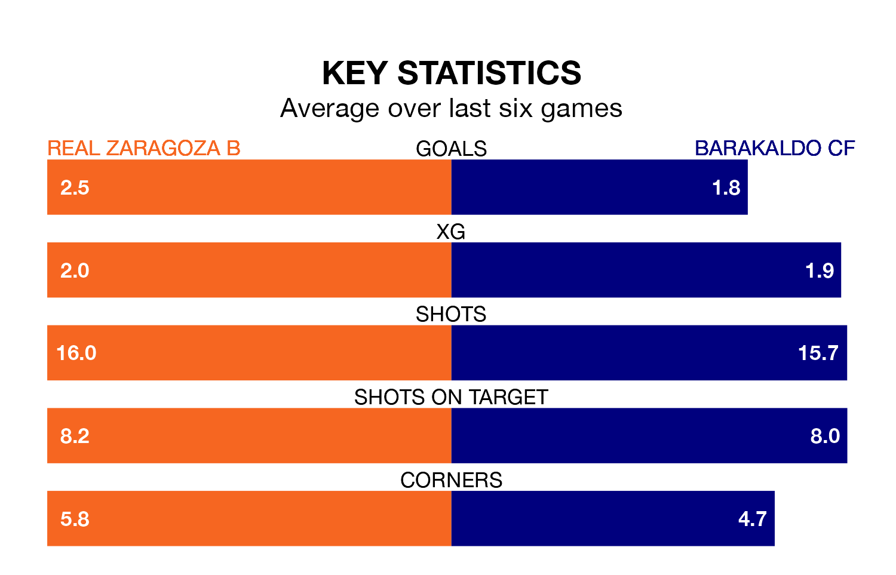

Barakaldo CF visit Real Zaragoza B at Ciudad Deportiva del Real Zaragoza on early Sunday on the back of four consecutive wins in the Segunda División RFEF Group 2.
Barakaldo have picked up 13 points from their last six games, and they face a Zaragoza B side who drew their last match, and have collected 11 points from the last possible 18.
With 54 goals in 32 games so far this season, Barakaldo are the league's joint-third-highest scorers with 1.7 goals per game. And they are conceding fewer than average, letting in 19 goals at a rate of 0.6 per game.
Zaragoza B are also above average scorers, with 1.5 goals per game, compared to a league average of 1.1. They have conceded 1.0 goal per game.
The visitors are second in the table after 32 games, of which they have won 20 and drawn 10, earning 70 points.
The home side are three places behind Barakaldo in fifth, with 15 wins and 11 draws putting them on 56 points.
Zaragoza B's last match was on April 21, a 2-2 draw against Arenas de Getxo, with Aitor Mañas Buenadicha getting the goals for Zaragoza B.
Barakaldo beat Deportivo Alaves B 3-2 last time out, also on Sunday, with Ander Laka Belaustegui and Íñigo Orozco Andonegi on the scoresheet.
Updated: 07:59 (UTC), 26/04/24